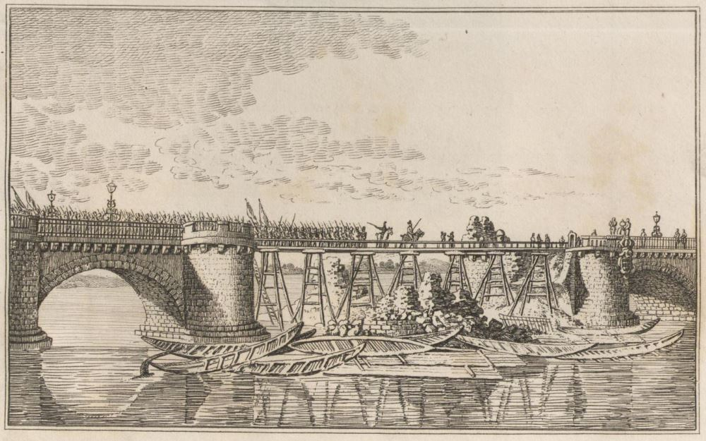
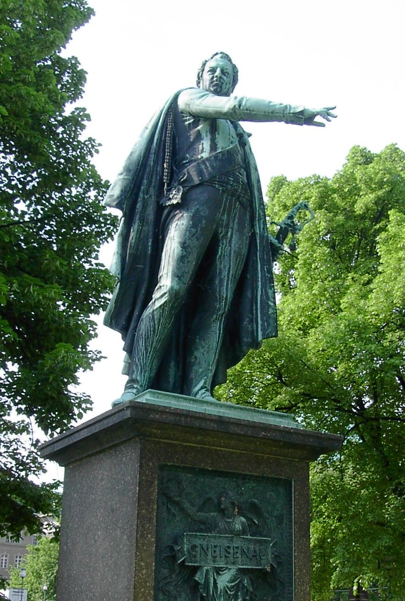

바우첸을 향하여 (3) - 샤른호스트의 빈 자리
게시: 2022-12-26T06:30:23+09:00
5월 6일 아침, 나폴레옹은 스파이들로부터 프로이센군과 러시아군이 각각 따로 엘베 강으로 향하고 있다는 소식을 접하고 매우 흡족해 했습니다. 특히 프로이센은 북쪽의 마이센(Meissen)으로 향하고 러시아군은 예상대로 남쪽의 드레스덴으로 향한다는 것을 듣고, 나폴레옹은 자신이 토르가우로 네의 군단을 보낸 것에 프로이센군이 베를린이 위협받고 있다고 겁을 집어먹었다고 확신했습니다. 그는 기분 좋게 그 날 저녁 뷔르젠(Wurzen)까지 도착했지만, 프로이센군 중 일부 1만2천 정도만 마이센으로 갔을 뿐 나머지는 모두 러시아군을 따라 드레스덴으로 갔다는 소식이 들어왔습니다. 이 소식에 놀란 나폴레옹은 정확한 정보를 얻기를 원했고, 프랑스군의 진격은 또 잠시 멈춰야 했습니다. 혹시나 이것들이 결별하지 않으면 어떡하지 하는 나폴레옹의 우려는 현실이었습니다만, 프로이센군과 러시아군의 관계는 결코 원만하지는 않았습니다. 일단 프로이센군의 사기는 높았습니다. 병사들은 결코 자신들이 패배했다고 생각하지 않았으며 후퇴 중에도 군기는 엄정했습니다. 그러나 강행군은 누가 뭐래도 힘들었고 특히 식량 사정이 안 좋았습니다. 그 이유가 특히 안 좋았습니다. 식량은 원래 어느 정도 충분했으나, 그 중 일부를 러시아군이 제멋대로 압류하여 가져가 버렸기 때문이었습니다. 그나이제나우는 총리인 하르덴베르크에게 편지를 써서 "후방에서도 전선의 군대를 위해 해 줄 수 있는 것이 있다, 병사들을 위해 빵과 와인을 보내달라"는 부탁을 해야 했습니다. 게다가 러시아군은 프로이센군을 대놓고 차별대우 했습니다. 가령 러시아군은 드레스덴에 도착하자 즉각 엘베 강을 건넌 뒤, 이른 봄에 다부가 파괴했다가 연합군이 수리했던 아우구스투스 다리의 목재 수리 부분을 다시 파괴했습니다. 즉 엘베 강 좌안의 드레스덴 시 대부분에는 아무 미련도 두지 않고 아무 방어를 준비하지 않았습니다. 그러면서도, 총사령관인 비트겐슈타인은 마이센에 도착한 블뤼허의 프로이센군에게 엘베 강을 건너지 말고 최대한 오래 강 좌안에 남아 프랑스군을 견제하라고 지시했습니다. 이건 프랑스군을 괴롭히기 위해 프로이센군의 무의미한 희생을 강요하는 일이었습니다.

(전에 자세히 소개드렸던 드레스덴의 아우구스투스 다리입니다. 다부가 많은 물의를 일으키며 파괴했던 가운데 부분을 연합군은 이렇게 나무로 수리해서 사용하고 있었는데, 이번에 후퇴하면서 다시 그 목재 부분을 파괴한 것입니다.) 이런 상황에서 큰 도움이 되었던 것은 프로이센과 러시아, 특히 프리드리히 빌헬름보다는 알렉산드르로부터 더 인정받고 존중받던 프로이센군 총참모장 샤른호스트였습니다. 그는 드레스덴에서 비트겐슈타인이 그런 부당한 명령을 프로이센군에게 내린 것을 알고는 비트겐슈타인에게 그것은 아무런 전략적 의미가 없는 조치라며 적극 항의했습니다. 짜르가 천재라고 칭찬할 뿐만 아니라 평소 온화하고 합리적인 성격이었던 샤른호스트의 항의는 비트겐슈타인도 무시할 수 없는 것이었습니다. 이 소식은 프로이센 국왕에게도 들어갔습니다. 비트겐슈타인의 부당한 명령으로 엘베 강 좌안에 묶여 있는 프로이센군이 당장에라도 프랑스군의 공격을 받을 위기라는 소식을 접하고 화가 난 프리드리히 빌헬름은 즉각 마이센 현장으로 달려갔습니다. 그러나 그가 현장에 도착해보니, 샤른호스트의 항의를 받은 비트겐슈타인이 즉각 명령을 철회하여 이미 프로이센군은 모두 우안으로 강을 건넌 뒤였습니다. 그 정도로, 샤른호스트가 프로이센-러시아 연합군의 결속에서 매우 중요한 역할을 했습니다. 그러나 이제 연합군의 그 구심점은 사라질 운명이었습니다. 마이센에서 샤른호스트 덕분에 말썽없이 엘베 강을 건넌 블뤼허는 옛 부하인 샤른호스트의 예방을 받았는데, 샤른호스트는 뤼첸 전투에서 발에 부상을 입었음에도 곧 오스트리아 빈으로 떠난다는 이야기를 하며 블뤼허에게 작별을 고했습니다. 역시 나폴레옹을 상대하기에는 2대1은 무리였고, 오스트리아까지 가세하여 3대1로 싸워야 했기 때문이었습니다. 오스트리아를 이 전쟁에 끌어들이기 위해서는, 역시 연합군 최고의 두뇌이자 논리가인 샤른호스트가 직접 사절단에 참가하는 것이 적절했습니다. 하지만 이렇게 부상에도 불구하고 무리한 결과, 이 날의 인사가 영원한 작별이 되고 말았습니다. 오스트리아에 도착한 지 얼마 뒤, 상처가 악화된 샤른호스트는 병석에 눕게 되었고 결국 6월 말 불귀의 객이 되었기 때문이었습니다. 샤른호스트의 빈 자리는 어렵지 않게 채울 수 있었습니다. 샤른호스트의 오른팔이자 이미 블뤼허의 참모 역할을 하고 있던 그나이제나우가 있었기 때문이었습니다. 그나이제나우도 샤른호스트와 동일한 노선의 인물이었으나, 성격은 상당히 달랐습니다. 샤른호스트가 합리적 선택을 하는 인물이었다면, 그나이제나우는 열정적인 선택을 하는 인물이었습니다. 즉, 그나이제나우의 성격은 샤른호스트보다는 블뤼허에 가까운 편이었습니다. 프로이센군 지휘부의 기존 강점은 블뤼허의 불 같은 용맹함에 샤른호스트의 물 같은 침착함이 결합하여 상호보완을 했다는 것이었는데, 이젠 불과 불이 결합하여 더 뜨거운 불이 된 셈이었습니다. 다행인 것은 그나이제나우와 블뤼허의 관계가 좋았다는 것이었습니다. 샤른호스트와 블뤼허의 관계도 물론 좋았습니다만 다른 점이 좀 있었습니다. 비록 블뤼허가 샤른호스트보다 훨씬 연장자였고 예전 상관이기도 했지만, 샤른호스트는 블뤼허를 마치 인자한 형이 용맹하지만 살짝 생각이 없는 동생에 대해서 가지는 것 같은 배려심으로 다루었습니다. 그에 비해 그나이제나우는 블뤼허를 용맹 그 자체로서 존경하는 마음으로 대하는 편이었습니다.

(베를린에 있는 그나이제나우의 동상입니다. 그나이제나우는 샤른호스트와는 달리 비록 몰락한 작센 가문이기는 해도 귀족 가문 출신이었습니다. 그는 결국 나폴레옹을 무찔러 폐위시킨 공을 인정받아 훨씬 서열이 높은 요크, 클라이스트, 뷜로와 어깨를 나란히 하며 백작에 봉해졌습니다. 나중에 워털루 전투에서는 더욱 중요한 역할을 맡았던 그나이제나우는 웰링턴을 도와 나폴레옹을 패배시키는데 결정적인 역할을 했으며, 그 추격에도 앞장서서 그의 부대가 나폴레옹의 마차를 노획하기도 했습니다. 그는 나중에 70세의 나이로 1831년 폴란드 반란을 진압하러 갔다가 당시 전세계를 휩쓸던 콜레라 팬데믹에 희생됩니다. 흔히 잘 알려지지 않은 사실은 당시 그의 참모장이 51세의 클라우제비츠였고 클라우제비츠 역시 그나이제나우와 함께 콜레라로 목숨을 잃었다는 것입니다.) 그렇다고 샤른호스트의 빈 자리가 완벽하게 채워진 것은 아니었습니다. 무엇보다 그나이제나우의 재능은 샤른호스트에 비해 좀 부족한 편이었습니다. 샤른호스트처럼 전체적인 그림을 보는 동시에 구체적인 기술적 문제까지 살피는 세심함이 그나이제나우에게는 없었습니다. 결정적으로, 러시아의 짜르와 장군들은 샤른호스트를 존중했던 것이지 프로이센군 참모장을 존중한 것은 아니었습니다. 샤른호스트가 러시아군으로부터 협조를 잘 끌어냈던 것은 단순히 그가 똑똑하고 아는 것이 많은 제갈량이어서가 아니었습니다. 샤른호스트는 나무를 보되 숲에 대한 큰 그림을 놓치지 않는 사람으로서, 그는 항상 러시아군의 입장을 이해하고 존중하며 어떻게든 두 왕국의 이해 상충을 최대한 좁혀보려고 노력했습니다. 사람들 사이의 관계는 다 똑같아서, 먼저 존중을 해줘야 존중을 받는 법입니다. 그러나 그나이제나우는 프로이센의 개혁을 주도한 사람답게 열혈남아다운 애국심이 앞섰고, 샤른호스트의 뒤를 이어 총참모장이 된 이후에도 러시아군에게 프로이센의 이익만 앞세우며 막무가내식 태도를 보이기 일쑤였습니다. 나중의 일입니다만, 그나이제나우의 이런 오만불손함에 질려버린 러시아군 수뇌부는 엄연히 명령체계의 하단에 있던 그를 군사재판에 회부하려 할 정도였고, 블뤼허의 간청을 받은 알렉산드르가 개입해서야 겨우 무마가 되었다고 합니다. 이렇게 불안불안한 러시아군과 프로이센군 사이의 알력은 엘베 강을 안전하게 건넌 다음에 본격적으로 드러나기 시작했습니다. 그러나 그 의견 차이는 나폴레옹이 고대하던 것과는 매우 거리가 먼 것이었습니다. Source : The Life of Napoleon Bonaparte, by William Milligan Sloane Napoleon and the Struggle for Germany, by Leggiere, Michael V
https://en.wikipedia.org/wiki/August_Neidhardt_von_Gneisenau
https://altesdresden.de/hist_idx.cgi?action=house&id=aubaz00&redirect=true